layout: true .toc.banner[ .shorttitle[ [ГИС аспирантура](break.html#home) ] ] --- name: home class: metadata customtitle middle left giphy .toc.sidebar.left-column[ .outline[ ## [Оцифровка ](#H4e114) ## [Классификация](#Hf6ec4) ] ] .toc.mainbar.right-column.scrollable[ .authors[ .author[Никита Платонов] .institute[с.н.с. ИПЭЭ РАН] ] .title[ Решение задач в QGIS ] .subtitle[ ГИС технологии в биологических исследованиях ] .what[ Занятие 09 ] .where[ ] .when[ .updated[Обновлено: 2025-02-13 11:08] ] ] --- name: H4e114 .toc.sidebar.left-column[ .outline[ ## [Оцифровка ](#H4e114).fg[].bg[] ### [Извлекаем рисунок](#H1081a) ### [Новая система координат](#H3449e) ### [Картооснова](#Hfa07e) ### [Геопривязка](#H74a30) ### [Обрисовка](#H0999a) ### [Получение характеристик](#H3cf56) ## [Классификация](#Hf6ec4) ] ] .toc.mainbar.right-column.scrollable[ .header.h2.broad[ Оцифровка ] .fixprecode[ <style type="text/css"> img.background { display: none; } </style> Задача: оценить площадь заприпайных площадей моря Лаптевых из «Атласа биологического разнообразия морей и побережий российской Арктики»<sup>*</sup> <span class="cite hovertext" data-hover="Атлас биологического разнообразия морей и побережий российской Арктики"><a name=cite-AtlasWWF></a>([Спиридонов Краснова и др., 2011](#bib))</span>, [стр. 37](https://wsbs-msu.ru/res/DOCFOLDER120/atlas_biol_ros_arkt_web.pdf#page=38). <iframe src="https://wsbs-msu.ru/res/DOCFOLDER120/atlas_biol_ros_arkt_web.pdf#page=38&view=fitb&zoom=40" width="1330" height="486" data-external="1"></iframe> .footer[ <sup>*</sup> «Атлас...» издан WWF России, по состоянию на 13 февраля 2025 г. находящегося в реестре запрещенных в РФ организаций. ] ] ] --- name: H1081a .toc.sidebar.left-column[ .outline[ ## [Оцифровка ](#H4e114).fg[] ### [Извлекаем рисунок](#H1081a).fg[].bg[] ### [Новая система координат](#H3449e) ### [Картооснова](#Hfa07e) ### [Геопривязка](#H74a30) ### [Обрисовка](#H0999a) ### [Получение характеристик](#H3cf56) ## [Классификация](#Hf6ec4) ] ] .toc.mainbar.right-column.scrollable[ .header.broad[ Извлекаем рисунок ] .fixprecode[ 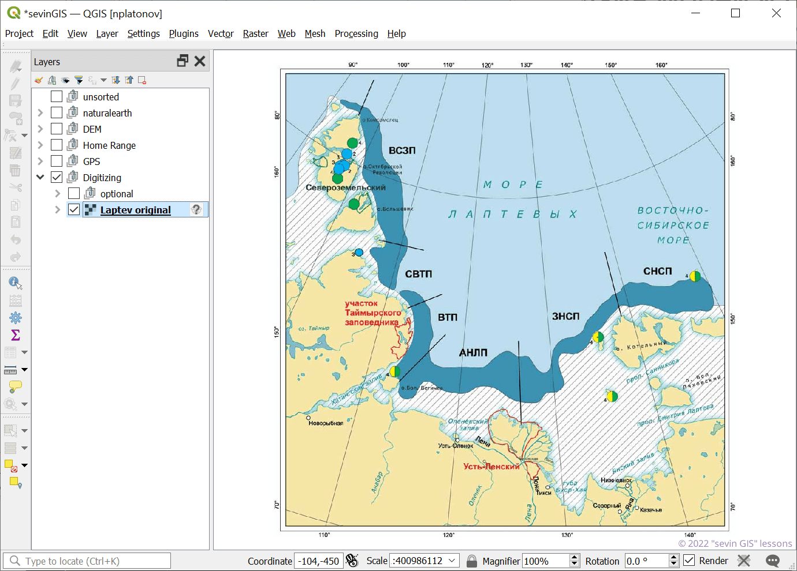 ] ] --- name: H3449e .toc.sidebar.left-column[ .outline[ ## [Оцифровка ](#H4e114).fg[] ### [Извлекаем рисунок](#H1081a) ### [Новая система координат](#H3449e) <span class="bullet bullet-active">[•](#H3449e)</span><span class="bullet mslide8m">[•](#Hd2c37)</span>.fg[].bg[] ### [Картооснова](#Hfa07e) ### [Геопривязка](#H74a30) ### [Обрисовка](#H0999a) ### [Получение характеристик](#H3cf56) ## [Классификация](#Hf6ec4) ] ] .toc.mainbar.right-column.scrollable[ .header.broad[ Новая система координат ] .fixprecode[ + Пробуем подобрать класс проекций (прямоугольная, равноугольная, равноплощадная, равнопромежуточная, ...) + Подбираем параметры проекции (центральный меридиан!) <img src="assets/lesson09/Clipboard04.png" width="1330" height="450" bound style="display: block; margin: auto auto auto 0;" /> ] ] --- name: Hd2c37 .toc.sidebar.left-column[ .outline[ ## [Оцифровка ](#H4e114).fg[] ### [Извлекаем рисунок](#H1081a) ### [Новая система координат](#H3449e) <span class="bullet bullet">[•](#H3449e)</span><span class="bullet bullet-active">[•](#Hd2c37)</span>.fg[].bg[] ### [Картооснова](#Hfa07e) ### [Геопривязка](#H74a30) ### [Обрисовка](#H0999a) ### [Получение характеристик](#H3cf56) ## [Классификация](#Hf6ec4) ] ] .toc.mainbar.right-column.scrollable[ .header.broad[ Новая система координат ] .fixprecode[ Устанавливаем систему координат проекта 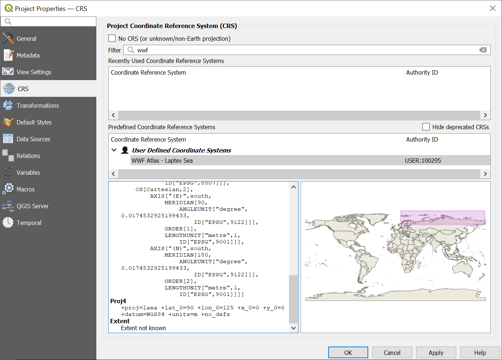 ] ] --- name: Hfa07e .toc.sidebar.left-column[ .outline[ ## [Оцифровка ](#H4e114).fg[] ### [Извлекаем рисунок](#H1081a) ### [Новая система координат](#H3449e) ### [Картооснова](#Hfa07e) <span class="bullet bullet-active">[•](#Hfa07e)</span><span class="bullet mslide10m">[•](#Hc9837)</span>.fg[].bg[] ### [Геопривязка](#H74a30) ### [Обрисовка](#H0999a) ### [Получение характеристик](#H3cf56) ## [Классификация](#Hf6ec4) ] ] .toc.mainbar.right-column.scrollable[ .header.broad[ Картооснова ] .fixprecode[ Необходимо выделить опорные точки, для которых известны географические координаты. <img src="assets/lesson09/Clipboard06.png" width="1330" height="575" style="display: block; margin: auto auto auto 0;" /> ] ] --- name: Hc9837 .toc.sidebar.left-column[ .outline[ ## [Оцифровка ](#H4e114).fg[] ### [Извлекаем рисунок](#H1081a) ### [Новая система координат](#H3449e) ### [Картооснова](#Hfa07e) <span class="bullet bullet">[•](#Hfa07e)</span><span class="bullet bullet-active">[•](#Hc9837)</span>.fg[].bg[] ### [Геопривязка](#H74a30) ### [Обрисовка](#H0999a) ### [Получение характеристик](#H3cf56) ## [Классификация](#Hf6ec4) ] ] .toc.mainbar.right-column.scrollable[ .header.broad[ Картооснова ] .fixprecode[ Дополнительные данные (координаты известных мысов, точки пересечения широт/долгот) <img src="assets/lesson09/Clipboard07.png" width="1330" height="575" style="display: block; margin: auto auto auto 0;" /> ] ] --- name: H74a30 .toc.sidebar.left-column[ .outline[ ## [Оцифровка ](#H4e114).fg[] ### [Извлекаем рисунок](#H1081a) ### [Новая система координат](#H3449e) ### [Картооснова](#Hfa07e) ### [Геопривязка](#H74a30) <span class="bullet bullet-active">[•](#H74a30)</span><span class="bullet mslide12m">[•](#H278d1)</span>.fg[].bg[] #### [Опорные точки](#H33309) #### [Параметры привязки](#H02f81) ### [Обрисовка](#H0999a) ### [Получение характеристик](#H3cf56) ## [Классификация](#Hf6ec4) ] ] .toc.mainbar.right-column.scrollable[ .header.broad[ Геопривязка ] .fixprecode[ Запускаем модуль <img src="assets/lesson09/Clipboard08.png" width="1330" height="580" style="display: block; margin: auto auto auto 0;" /> ] ] --- name: H278d1 .toc.sidebar.left-column[ .outline[ ## [Оцифровка ](#H4e114).fg[] ### [Извлекаем рисунок](#H1081a) ### [Новая система координат](#H3449e) ### [Картооснова](#Hfa07e) ### [Геопривязка](#H74a30) <span class="bullet bullet">[•](#H74a30)</span><span class="bullet bullet-active">[•](#H278d1)</span>.fg[].bg[] #### [Опорные точки](#H33309) #### [Параметры привязки](#H02f81) ### [Обрисовка](#H0999a) ### [Получение характеристик](#H3cf56) ## [Классификация](#Hf6ec4) ] ] .toc.mainbar.right-column.scrollable[ .header.broad[ Геопривязка ] .fixprecode[ Открываем исходный рисунок <img src="assets/lesson09/Clipboard09.png" width="1330" height="580" style="display: block; margin: auto auto auto 0;" /> ] ] --- name: H33309 .toc.sidebar.left-column[ .outline[ ## [Оцифровка ](#H4e114).fg[] ### [Извлекаем рисунок](#H1081a) ### [Новая система координат](#H3449e) ### [Картооснова](#Hfa07e) ### [Геопривязка](#H74a30).fg[] #### [Опорные точки](#H33309) <span class="bullet bullet-active">[•](#H33309)</span><span class="bullet mslide15m">[•](#Hb9e98)</span>.fg[].bg[] #### [Параметры привязки](#H02f81) ### [Обрисовка](#H0999a) ### [Получение характеристик](#H3cf56) ## [Классификация](#Hf6ec4) ] ] .toc.mainbar.right-column.scrollable[ .header.broad[ Опорные точки ] .fixprecode[ Создаем таблицу опорных точек, стараясь, чтобы они были распределены равномерно <img src="assets/lesson09/Clipboard10.png" width="1330" height="580" style="display: block; margin: auto auto auto 0;" /> ] ] --- name: Hb9e98 .toc.sidebar.left-column[ .outline[ ## [Оцифровка ](#H4e114).fg[] ### [Извлекаем рисунок](#H1081a) ### [Новая система координат](#H3449e) ### [Картооснова](#Hfa07e) ### [Геопривязка](#H74a30).fg[] #### [Опорные точки](#H33309) <span class="bullet bullet">[•](#H33309)</span><span class="bullet bullet-active">[•](#Hb9e98)</span>.fg[].bg[] #### [Параметры привязки](#H02f81) ### [Обрисовка](#H0999a) ### [Получение характеристик](#H3cf56) ## [Классификация](#Hf6ec4) ] ] .toc.mainbar.right-column.scrollable[ .header.broad[ Опорные точки ] .fixprecode[ Точке на рисунке соотносим точку на картооснове или задаем координаты вручную <img src="assets/lesson09/Clipboard11.png" width="1330" height="575" style="display: block; margin: auto auto auto 0;" /> ] ] --- name: H02f81 .toc.sidebar.left-column[ .outline[ ## [Оцифровка ](#H4e114).fg[] ### [Извлекаем рисунок](#H1081a) ### [Новая система координат](#H3449e) ### [Картооснова](#Hfa07e) ### [Геопривязка](#H74a30).fg[] #### [Опорные точки](#H33309) #### [Параметры привязки](#H02f81) <span class="bullet bullet-active">[•](#H02f81)</span><span class="bullet mslide17m">[•](#H57e7e)</span><span class="bullet mslide18m">[•](#Hc758f)</span><span class="bullet mslide19m">[•](#Hb05fc)</span><span class="bullet mslide20m">[•](#He2ae2)</span>.fg[].bg[] ### [Обрисовка](#H0999a) ### [Получение характеристик](#H3cf56) ## [Классификация](#Hf6ec4) ] ] .toc.mainbar.right-column.scrollable[ .header.broad[ Параметры привязки ] .fixprecode[ <img src="assets/lesson09/Clipboard12.png" width="1330" height="580" style="display: block; margin: auto auto auto 0;" /> ] ] --- name: H57e7e .toc.sidebar.left-column[ .outline[ ## [Оцифровка ](#H4e114).fg[] ### [Извлекаем рисунок](#H1081a) ### [Новая система координат](#H3449e) ### [Картооснова](#Hfa07e) ### [Геопривязка](#H74a30).fg[] #### [Опорные точки](#H33309) #### [Параметры привязки](#H02f81) <span class="bullet bullet">[•](#H02f81)</span><span class="bullet bullet-active">[•](#H57e7e)</span><span class="bullet mslide18m">[•](#Hc758f)</span><span class="bullet mslide19m">[•](#Hb05fc)</span><span class="bullet mslide20m">[•](#He2ae2)</span>.fg[].bg[] ### [Обрисовка](#H0999a) ### [Получение характеристик](#H3cf56) ## [Классификация](#Hf6ec4) ] ] .toc.mainbar.right-column.scrollable[ .header.broad[ Параметры привязки ] .fixprecode[ <img src="assets/lesson09/Clipboard15.png" width="1330" height="580" style="display: block; margin: auto auto auto 0;" /> ] ] --- name: Hc758f .toc.sidebar.left-column[ .outline[ ## [Оцифровка ](#H4e114).fg[] ### [Извлекаем рисунок](#H1081a) ### [Новая система координат](#H3449e) ### [Картооснова](#Hfa07e) ### [Геопривязка](#H74a30).fg[] #### [Опорные точки](#H33309) #### [Параметры привязки](#H02f81) <span class="bullet bullet">[•](#H02f81)</span><span class="bullet bullet">[•](#H57e7e)</span><span class="bullet bullet-active">[•](#Hc758f)</span><span class="bullet mslide19m">[•](#Hb05fc)</span><span class="bullet mslide20m">[•](#He2ae2)</span>.fg[].bg[] ### [Обрисовка](#H0999a) ### [Получение характеристик](#H3cf56) ## [Классификация](#Hf6ec4) ] ] .toc.mainbar.right-column.scrollable[ .header.broad[ Параметры привязки ] .fixprecode[ Итерационный процесс: ищем оптимальный вариант, запуская приязку после изменения параметров + тип преобразования + метод записи нового значения в ячейку (resample) + параметры проекции + размер ячейки + изменяем положения точек + добавляем, удаляем точки ] ] --- name: Hb05fc .toc.sidebar.left-column[ .outline[ ## [Оцифровка ](#H4e114).fg[] ### [Извлекаем рисунок](#H1081a) ### [Новая система координат](#H3449e) ### [Картооснова](#Hfa07e) ### [Геопривязка](#H74a30).fg[] #### [Опорные точки](#H33309) #### [Параметры привязки](#H02f81) <span class="bullet bullet">[•](#H02f81)</span><span class="bullet bullet">[•](#H57e7e)</span><span class="bullet bullet">[•](#Hc758f)</span><span class="bullet bullet-active">[•](#Hb05fc)</span><span class="bullet mslide20m">[•](#He2ae2)</span>.fg[].bg[] ### [Обрисовка](#H0999a) ### [Получение характеристик](#H3cf56) ## [Классификация](#Hf6ec4) ] ] .toc.mainbar.right-column.scrollable[ .header.broad[ Параметры привязки ] .fixprecode[ <img src="assets/lesson09/Clipboard14.png" width="1330" height="580" style="display: block; margin: auto auto auto 0;" /> ] ] --- name: He2ae2 .toc.sidebar.left-column[ .outline[ ## [Оцифровка ](#H4e114).fg[] ### [Извлекаем рисунок](#H1081a) ### [Новая система координат](#H3449e) ### [Картооснова](#Hfa07e) ### [Геопривязка](#H74a30).fg[] #### [Опорные точки](#H33309) #### [Параметры привязки](#H02f81) <span class="bullet bullet">[•](#H02f81)</span><span class="bullet bullet">[•](#H57e7e)</span><span class="bullet bullet">[•](#Hc758f)</span><span class="bullet bullet">[•](#Hb05fc)</span><span class="bullet bullet-active">[•](#He2ae2)</span>.fg[].bg[] ### [Обрисовка](#H0999a) ### [Получение характеристик](#H3cf56) ## [Классификация](#Hf6ec4) ] ] .toc.mainbar.right-column.scrollable[ .header.broad[ Параметры привязки ] .fixprecode[ Оценка качества по минимизации искажений 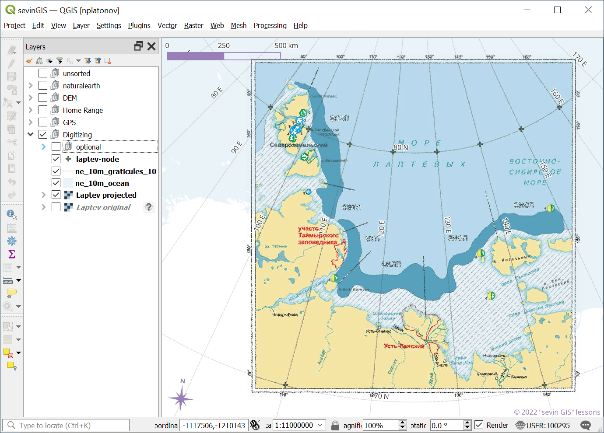 ] ] --- name: H0999a .toc.sidebar.left-column[ .outline[ ## [Оцифровка ](#H4e114).fg[] ### [Извлекаем рисунок](#H1081a) ### [Новая система координат](#H3449e) ### [Картооснова](#Hfa07e) ### [Геопривязка](#H74a30) ### [Обрисовка](#H0999a) <span class="bullet bullet-active">[•](#H0999a)</span><span class="bullet mslide22m">[•](#H0ca04)</span><span class="bullet mslide23m">[•](#H7ba77)</span>.fg[].bg[] ### [Получение характеристик](#H3cf56) ## [Классификация](#Hf6ec4) ] ] .toc.mainbar.right-column.scrollable[ .header.broad[ Обрисовка ] .fixprecode[ Новый векторный слой <img src="assets/lesson09/Clipboard17.png" width="1330" height="580" style="display: block; margin: auto auto auto 0;" /> ] ] --- name: H0ca04 .toc.sidebar.left-column[ .outline[ ## [Оцифровка ](#H4e114).fg[] ### [Извлекаем рисунок](#H1081a) ### [Новая система координат](#H3449e) ### [Картооснова](#Hfa07e) ### [Геопривязка](#H74a30) ### [Обрисовка](#H0999a) <span class="bullet bullet">[•](#H0999a)</span><span class="bullet bullet-active">[•](#H0ca04)</span><span class="bullet mslide23m">[•](#H7ba77)</span>.fg[].bg[] ### [Получение характеристик](#H3cf56) ## [Классификация](#Hf6ec4) ] ] .toc.mainbar.right-column.scrollable[ .header.broad[ Обрисовка ] .fixprecode[ Для обрисовки площадных объектов выбираем полигональную геометрию <img src="assets/lesson09/Clipboard18.png" width="1330" height="575" style="display: block; margin: auto auto auto 0;" /> ] ] --- name: H7ba77 .toc.sidebar.left-column[ .outline[ ## [Оцифровка ](#H4e114).fg[] ### [Извлекаем рисунок](#H1081a) ### [Новая система координат](#H3449e) ### [Картооснова](#Hfa07e) ### [Геопривязка](#H74a30) ### [Обрисовка](#H0999a) <span class="bullet bullet">[•](#H0999a)</span><span class="bullet bullet">[•](#H0ca04)</span><span class="bullet bullet-active">[•](#H7ba77)</span>.fg[].bg[] ### [Получение характеристик](#H3cf56) ## [Классификация](#Hf6ec4) ] ] .toc.mainbar.right-column.scrollable[ .header.broad[ Обрисовка ] .fixprecode[ Обводим контуры и заполняем атрибутивную таблицу <img src="assets/lesson09/Clipboard19.png" width="1330" height="580" style="display: block; margin: auto auto auto 0;" /> ] ] --- name: H3cf56 .toc.sidebar.left-column[ .outline[ ## [Оцифровка ](#H4e114).fg[] ### [Извлекаем рисунок](#H1081a) ### [Новая система координат](#H3449e) ### [Картооснова](#Hfa07e) ### [Геопривязка](#H74a30) ### [Обрисовка](#H0999a) ### [Получение характеристик](#H3cf56) <span class="bullet bullet-active">[•](#H3cf56)</span><span class="bullet mslide25m">[•](#H92c4d)</span>.fg[].bg[] ## [Классификация](#Hf6ec4) ] ] .toc.mainbar.right-column.scrollable[ .header.broad[ Получение характеристик ] .fixprecode[ Используем калькулятор полей для вывода аннотаций <img src="assets/lesson09/Clipboard20.png" width="1330" height="580" style="display: block; margin: auto auto auto 0;" /> ] ] --- name: H92c4d .toc.sidebar.left-column[ .outline[ ## [Оцифровка ](#H4e114).fg[] ### [Извлекаем рисунок](#H1081a) ### [Новая система координат](#H3449e) ### [Картооснова](#Hfa07e) ### [Геопривязка](#H74a30) ### [Обрисовка](#H0999a) ### [Получение характеристик](#H3cf56) <span class="bullet bullet">[•](#H3cf56)</span><span class="bullet bullet-active">[•](#H92c4d)</span>.fg[].bg[] ## [Классификация](#Hf6ec4) ] ] .toc.mainbar.right-column.scrollable[ .header.broad[ Получение характеристик ] .fixprecode[ Результат можно сравнить со значениями столбчатой диаграммы <img src="assets/lesson09/Clipboard21.png" width="1330" height="575" style="display: block; margin: auto auto auto 0;" /> ] ] --- class: break inverse bottom right background-color: #032040 background-image: url(https://i.ytimg.com/vi/_HKLxlS2sv4/maxresdefault.jpg) background-size: cover .onlyremark.huge[Демонстрация в QGIS] --- class: notable inverse middle picsum .note[ ## Домашнее задание на [10 апреля 2025 г.](index.html#deadline3) Оценить площадь каждой из обозначенных в легенде заприпайных полыней Карского моря из «Атласа биологического разнообразия морей и побережий российской Арктики»<sup>*</sup> <span class="cite hovertext" data-hover="Атлас биологического разнообразия морей и побережий российской Арктики">([Спиридонов Краснова и др., 2011](#bib))</span>, [стр. 35](https://wsbs-msu.ru/res/DOCFOLDER120/atlas_biol_ros_arkt_web.pdf#page=36&zoom=40) Береговую линию не оцифровывать, а вырезать по слою из набора [Natural Earth World GIS Data](https://www.naturalearthdata.com/) 1:10m. ] .footer[ <sup>*</sup> «Атлас...» издан WWF России, по состоянию на 13 февраля 2025 г. находящегося в реестре иностранных агентов. ] --- name: Hf6ec4 .toc.sidebar.left-column[ .outline[ ## [Оцифровка ](#H4e114) ## [Классификация](#Hf6ec4).fg[] ### [Установка модуля](#Hf6ec4) <span class="bullet bullet-active">[•](#Hf6ec4)</span><span class="bullet mslide30m">[•](#Hfbb51)</span><span class="bullet mslide31m">[•](#H8cb22)</span>.fg[].bg[] ### [Предобработка](#download) ### [Без учителя](#H2cb2c) ### [С учителем](#Hb1b58) ] ] .toc.mainbar.right-column.scrollable[ .header.broad[ Установка модуля ] .fixprecode[ QGIS, «Semi-Automatic Classification Plugin» - один из самых популярных [модулей](https://plugins.qgis.org/plugins/?sort=-downloads) <iframe src="https://plugins.qgis.org/plugins/?sort=-downloads" width="800" height="570" data-external="1"></iframe> ] ] --- name: Hfbb51 .toc.sidebar.left-column[ .outline[ ## [Оцифровка ](#H4e114) ## [Классификация](#Hf6ec4).fg[] ### [Установка модуля](#Hf6ec4) <span class="bullet bullet">[•](#Hf6ec4)</span><span class="bullet bullet-active">[•](#Hfbb51)</span><span class="bullet mslide31m">[•](#H8cb22)</span>.fg[].bg[] ### [Предобработка](#download) ### [Без учителя](#H2cb2c) ### [С учителем](#Hb1b58) ] ] .toc.mainbar.right-column.scrollable[ .header.broad[ Установка модуля ] .fixprecode[ Устанавливается через меню в QGIS 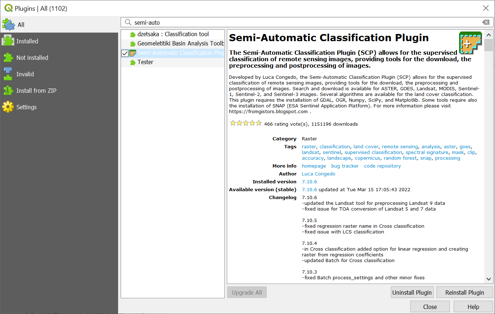 [Домашняя страница модуля](https://fromgistors.blogspot.com/p/semi-automatic-classification-plugin.html) ] ] --- name: H8cb22 .toc.sidebar.left-column[ .outline[ ## [Оцифровка ](#H4e114) ## [Классификация](#Hf6ec4).fg[] ### [Установка модуля](#Hf6ec4) <span class="bullet bullet">[•](#Hf6ec4)</span><span class="bullet bullet">[•](#Hfbb51)</span><span class="bullet bullet-active">[•](#H8cb22)</span>.fg[].bg[] ### [Предобработка](#download) ### [Без учителя](#H2cb2c) ### [С учителем](#Hb1b58) ] ] .toc.mainbar.right-column.scrollable[ .header.broad[ Установка модуля ] .fixprecode[ В QGIS появятся пункт меню, Dock-панель и Toolbar «SCP» <img src="assets/lesson09/Clipboard42.png" width="1330" height="600" bound style="display: block; margin: auto auto auto 0;" /> ] ] --- name: download .toc.sidebar.left-column[ .outline[ ## [Оцифровка ](#H4e114) ## [Классификация](#Hf6ec4).fg[] ### [Установка модуля](#Hf6ec4) ### [Предобработка](#download).fg[] #### [Получение данных](#download).fg[].bg[] #### [Обрезка данных](#clip) #### [Преобразование яркости](#RT) #### [Маскирование облачности](#He66c1) #### [Отображение данных](#rgb) ### [Без учителя](#H2cb2c) ### [С учителем](#Hb1b58) ] ] .toc.mainbar.right-column.scrollable[ .header.broad[ Получение данных ] .fixprecode[ <img src="assets/lesson09/Clipboard45.png" width="1330" height="600" bound style="display: block; margin: auto auto auto 0;" /> ] ] --- name: clip .toc.sidebar.left-column[ .outline[ ## [Оцифровка ](#H4e114) ## [Классификация](#Hf6ec4).fg[] ### [Установка модуля](#Hf6ec4) ### [Предобработка](#download).fg[] #### [Получение данных](#download) #### [Обрезка данных](#clip) <span class="bullet bullet-active">[•](#clip)</span><span class="bullet mslide35m">[•](#H8bdfe)</span>.fg[].bg[] #### [Преобразование яркости](#RT) #### [Маскирование облачности](#He66c1) #### [Отображение данных](#rgb) ### [Без учителя](#H2cb2c) ### [С учителем](#Hb1b58) ] ] .toc.mainbar.right-column.scrollable[ .header.broad[ Обрезка данных ] .fixprecode[ Должен быть выбран нужный Band Set номер. <img src="assets/lesson09/Clipboard54.png" width="1330" height="600" bound style="display: block; margin: auto auto auto 0;" /> ] ] --- name: H8bdfe .toc.sidebar.left-column[ .outline[ ## [Оцифровка ](#H4e114) ## [Классификация](#Hf6ec4).fg[] ### [Установка модуля](#Hf6ec4) ### [Предобработка](#download).fg[] #### [Получение данных](#download) #### [Обрезка данных](#clip) <span class="bullet bullet">[•](#clip)</span><span class="bullet bullet-active">[•](#H8bdfe)</span>.fg[].bg[] #### [Преобразование яркости](#RT) #### [Маскирование облачности](#He66c1) #### [Отображение данных](#rgb) ### [Без учителя](#H2cb2c) ### [С учителем](#Hb1b58) ] ] .toc.mainbar.right-column.scrollable[ .header.broad[ Обрезка данных ] .fixprecode[ <img src="assets/lesson09/Clipboard55.png" width="1330" height="600" bound style="display: block; margin: auto auto auto 0;" /> ] ] --- name: RT .toc.sidebar.left-column[ .outline[ ## [Оцифровка ](#H4e114) ## [Классификация](#Hf6ec4).fg[] ### [Установка модуля](#Hf6ec4) ### [Предобработка](#download).fg[] #### [Получение данных](#download) #### [Обрезка данных](#clip) #### [Преобразование яркости](#RT).fg[].bg[] #### [Маскирование облачности](#He66c1) #### [Отображение данных](#rgb) ### [Без учителя](#H2cb2c) ### [С учителем](#Hb1b58) ] ] .toc.mainbar.right-column.scrollable[ .header.broad[ Преобразование яркости ] .fixprecode[ <img src="assets/lesson09/Clipboard75.png" width="1330" height="600" bound style="display: block; margin: auto auto auto 0;" /> ] ] --- name: He66c1 .toc.sidebar.left-column[ .outline[ ## [Оцифровка ](#H4e114) ## [Классификация](#Hf6ec4).fg[] ### [Установка модуля](#Hf6ec4) ### [Предобработка](#download).fg[] #### [Получение данных](#download) #### [Обрезка данных](#clip) #### [Преобразование яркости](#RT) #### [Маскирование облачности](#He66c1).fg[].bg[] #### [Отображение данных](#rgb) ### [Без учителя](#H2cb2c) ### [С учителем](#Hb1b58) ] ] .toc.mainbar.right-column.scrollable[ .header.broad[ Маскирование облачности ] .fixprecode[ <img src="assets/lesson09/Clipboard77.png" width="1330" height="600" bound style="display: block; margin: auto auto auto 0;" /> ] ] --- name: rgb .toc.sidebar.left-column[ .outline[ ## [Оцифровка ](#H4e114) ## [Классификация](#Hf6ec4).fg[] ### [Установка модуля](#Hf6ec4) ### [Предобработка](#download).fg[] #### [Получение данных](#download) #### [Обрезка данных](#clip) #### [Преобразование яркости](#RT) #### [Маскирование облачности](#He66c1) #### [Отображение данных](#rgb) <span class="bullet bullet-active">[•](#rgb)</span><span class="bullet mslide39m">[•](#H8269a)</span>.fg[].bg[] ### [Без учителя](#H2cb2c) ### [С учителем](#Hb1b58) ] ] .toc.mainbar.right-column.scrollable[ .header.broad[ Отображение данных ] .fixprecode[ Каналы для формирования RGB-изображения (7-3-2) 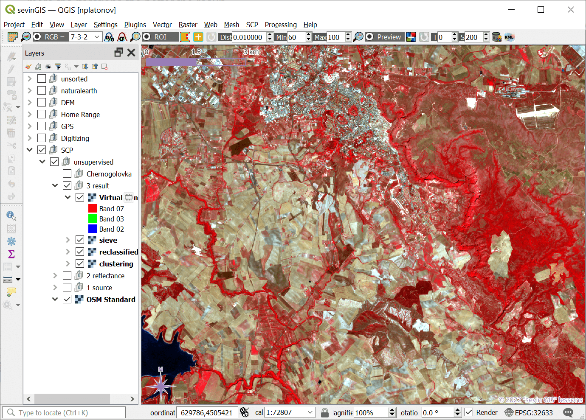 ] ] --- name: H8269a .toc.sidebar.left-column[ .outline[ ## [Оцифровка ](#H4e114) ## [Классификация](#Hf6ec4).fg[] ### [Установка модуля](#Hf6ec4) ### [Предобработка](#download).fg[] #### [Получение данных](#download) #### [Обрезка данных](#clip) #### [Преобразование яркости](#RT) #### [Маскирование облачности](#He66c1) #### [Отображение данных](#rgb) <span class="bullet bullet">[•](#rgb)</span><span class="bullet bullet-active">[•](#H8269a)</span>.fg[].bg[] ### [Без учителя](#H2cb2c) ### [С учителем](#Hb1b58) ] ] .toc.mainbar.right-column.scrollable[ .header.broad[ Отображение данных ] .fixprecode[ Через SCP Working Panel выбрать RGB = 3-2-1 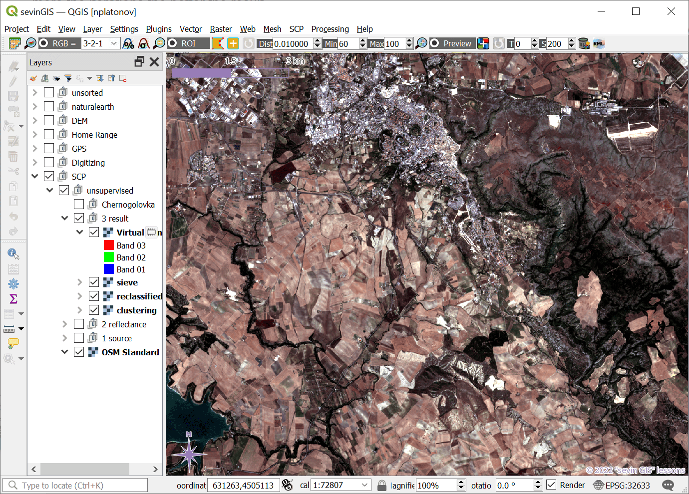 ] ] --- class: middle name: H2cb2c .toc.sidebar.left-column[ .outline[ ## [Оцифровка ](#H4e114) ## [Классификация](#Hf6ec4).fg[] ### [Установка модуля](#Hf6ec4) ### [Предобработка](#download) ### [Без учителя](#H2cb2c) <span class="bullet bullet-active">[•](#H2cb2c)</span><span class="bullet mslide42m">[•](#H5afae)</span>.fg[].bg[] #### [Кластеризация](#Hf0893) #### [Реклассификация](#H620d3) #### [Просеивание](#H99520) ### [С учителем](#Hb1b58) ] ] .toc.mainbar.right-column.scrollable[ .header.broad[ Без учителя ] .fixprecode[ Использовано обучающее пособие [«Unsupervised Classification using the Semi-Automatic Classification Plugin version 7»](https://fromgistors.blogspot.com/2021/01/unsupervised-classification-using-scp7.html) Набор данных – фрагмент изображений Copernicus-2, [архив](https://docs.google.com/uc?id=1cph9rCQ1oiWgRGusgRkjUWwLW3JEwqUK). ] ] --- name: H5afae .toc.sidebar.left-column[ .outline[ ## [Оцифровка ](#H4e114) ## [Классификация](#Hf6ec4).fg[] ### [Установка модуля](#Hf6ec4) ### [Предобработка](#download) ### [Без учителя](#H2cb2c) <span class="bullet bullet">[•](#H2cb2c)</span><span class="bullet bullet-active">[•](#H5afae)</span>.fg[].bg[] #### [Кластеризация](#Hf0893) #### [Реклассификация](#H620d3) #### [Просеивание](#H99520) ### [С учителем](#Hb1b58) ] ] .toc.mainbar.right-column.scrollable[ .header.broad[ Без учителя ] .fixprecode[ Загружать в проект необязательно, но можно сделать для «знакомства» с данными. ] ] --- name: Hf0893 .toc.sidebar.left-column[ .outline[ ## [Оцифровка ](#H4e114) ## [Классификация](#Hf6ec4).fg[] ### [Установка модуля](#Hf6ec4) ### [Предобработка](#download) ### [Без учителя](#H2cb2c).fg[] #### [Кластеризация](#Hf0893) <span class="bullet bullet-active">[•](#Hf0893)</span><span class="bullet mslide44m">[•](#Hb3994)</span>.fg[].bg[] #### [Реклассификация](#H620d3) #### [Просеивание](#H99520) ### [С учителем](#Hb1b58) ] ] .toc.mainbar.right-column.scrollable[ .header.broad[ Кластеризация ] .fixprecode[ Алгоритм ISODATA <img src="assets/lesson09/Clipboard56.png" width="1330" height="600" bound style="display: block; margin: auto auto auto 0;" /> ] ] --- name: Hb3994 .toc.sidebar.left-column[ .outline[ ## [Оцифровка ](#H4e114) ## [Классификация](#Hf6ec4).fg[] ### [Установка модуля](#Hf6ec4) ### [Предобработка](#download) ### [Без учителя](#H2cb2c).fg[] #### [Кластеризация](#Hf0893) <span class="bullet bullet">[•](#Hf0893)</span><span class="bullet bullet-active">[•](#Hb3994)</span>.fg[].bg[] #### [Реклассификация](#H620d3) #### [Просеивание](#H99520) ### [С учителем](#Hb1b58) ] ] .toc.mainbar.right-column.scrollable[ .header.broad[ Кластеризация ] .fixprecode[ Результат ISODATA 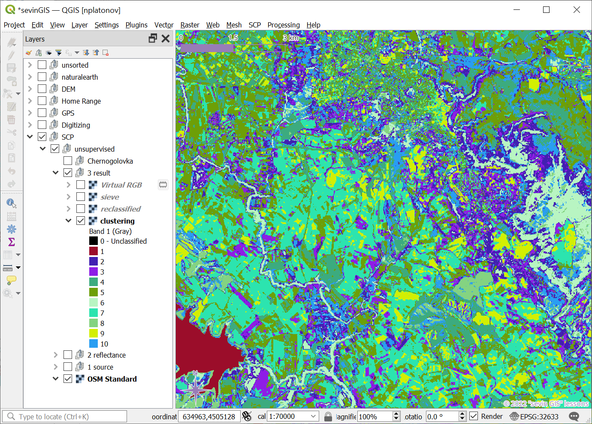 ] ] --- name: H620d3 .toc.sidebar.left-column[ .outline[ ## [Оцифровка ](#H4e114) ## [Классификация](#Hf6ec4).fg[] ### [Установка модуля](#Hf6ec4) ### [Предобработка](#download) ### [Без учителя](#H2cb2c).fg[] #### [Кластеризация](#Hf0893) #### [Реклассификация](#H620d3) <span class="bullet bullet-active">[•](#H620d3)</span><span class="bullet mslide46m">[•](#H5d972)</span><span class="bullet mslide47m">[•](#H2a901)</span><span class="bullet mslide48m">[•](#Hba2f0)</span>.fg[].bg[] #### [Просеивание](#H99520) ### [С учителем](#Hb1b58) ] ] .toc.mainbar.right-column.scrollable[ .header.broad[ Реклассификация ] .fixprecode[ Нужно присвоить номерам классов названия категорий. К примеру, можно использовать 7-3-2, 3-2-1 RGB изображения, другие данные (OSM, как ниже). <img src="assets/lesson09/Clipboard59.png" width="1330" height="520" bound style="display: block; margin: auto auto auto 0;" /> ] ] --- name: H5d972 .toc.sidebar.left-column[ .outline[ ## [Оцифровка ](#H4e114) ## [Классификация](#Hf6ec4).fg[] ### [Установка модуля](#Hf6ec4) ### [Предобработка](#download) ### [Без учителя](#H2cb2c).fg[] #### [Кластеризация](#Hf0893) #### [Реклассификация](#H620d3) <span class="bullet bullet">[•](#H620d3)</span><span class="bullet bullet-active">[•](#H5d972)</span><span class="bullet mslide47m">[•](#H2a901)</span><span class="bullet mslide48m">[•](#Hba2f0)</span>.fg[].bg[] #### [Просеивание](#H99520) ### [С учителем](#Hb1b58) ] ] .toc.mainbar.right-column.scrollable[ .header.broad[ Реклассификация ] .fixprecode[ <img src="assets/lesson09/Clipboard60.png" width="1330" height="600" bound style="display: block; margin: auto auto auto 0;" /> ] ] --- name: H2a901 .toc.sidebar.left-column[ .outline[ ## [Оцифровка ](#H4e114) ## [Классификация](#Hf6ec4).fg[] ### [Установка модуля](#Hf6ec4) ### [Предобработка](#download) ### [Без учителя](#H2cb2c).fg[] #### [Кластеризация](#Hf0893) #### [Реклассификация](#H620d3) <span class="bullet bullet">[•](#H620d3)</span><span class="bullet bullet">[•](#H5d972)</span><span class="bullet bullet-active">[•](#H2a901)</span><span class="bullet mslide48m">[•](#Hba2f0)</span>.fg[].bg[] #### [Просеивание](#H99520) ### [С учителем](#Hb1b58) ] ] .toc.mainbar.right-column.scrollable[ .header.broad[ Реклассификация ] .fixprecode[ <img src="assets/lesson09/Clipboard61.png" width="1330" height="600" bound style="display: block; margin: auto auto auto 0;" /> ] ] --- name: Hba2f0 .toc.sidebar.left-column[ .outline[ ## [Оцифровка ](#H4e114) ## [Классификация](#Hf6ec4).fg[] ### [Установка модуля](#Hf6ec4) ### [Предобработка](#download) ### [Без учителя](#H2cb2c).fg[] #### [Кластеризация](#Hf0893) #### [Реклассификация](#H620d3) <span class="bullet bullet">[•](#H620d3)</span><span class="bullet bullet">[•](#H5d972)</span><span class="bullet bullet">[•](#H2a901)</span><span class="bullet bullet-active">[•](#Hba2f0)</span>.fg[].bg[] #### [Просеивание](#H99520) ### [С учителем](#Hb1b58) ] ] .toc.mainbar.right-column.scrollable[ .header.broad[ Реклассификация ] .fixprecode[ <img src="assets/lesson09/Clipboard62.png" width="1330" height="600" bound style="display: block; margin: auto auto auto 0;" /> ] ] --- name: H99520 .toc.sidebar.left-column[ .outline[ ## [Оцифровка ](#H4e114) ## [Классификация](#Hf6ec4).fg[] ### [Установка модуля](#Hf6ec4) ### [Предобработка](#download) ### [Без учителя](#H2cb2c).fg[] #### [Кластеризация](#Hf0893) #### [Реклассификация](#H620d3) #### [Просеивание](#H99520) <span class="bullet bullet-active">[•](#H99520)</span><span class="bullet mslide50m">[•](#Hadefb)</span>.fg[].bg[] ### [С учителем](#Hb1b58) ] ] .toc.mainbar.right-column.scrollable[ .header.broad[ Просеивание ] .fixprecode[ Удаление шума - отдельных ячеек одного класса, окруженных ячейками другого класса <img src="assets/lesson09/Clipboard63.png" width="1330" height="560" bound style="display: block; margin: auto auto auto 0;" /> ] ] --- name: Hadefb .toc.sidebar.left-column[ .outline[ ## [Оцифровка ](#H4e114) ## [Классификация](#Hf6ec4).fg[] ### [Установка модуля](#Hf6ec4) ### [Предобработка](#download) ### [Без учителя](#H2cb2c).fg[] #### [Кластеризация](#Hf0893) #### [Реклассификация](#H620d3) #### [Просеивание](#H99520) <span class="bullet bullet">[•](#H99520)</span><span class="bullet bullet-active">[•](#Hadefb)</span>.fg[].bg[] ### [С учителем](#Hb1b58) ] ] .toc.mainbar.right-column.scrollable[ .header.broad[ Просеивание ] .fixprecode[ <img src="assets/lesson09/Clipboard64.png" width="1330" height="600" bound style="display: block; margin: auto auto auto 0;" /> ] ] --- class: break inverse bottom right background-color: #032040 background-image: url(https://i.ytimg.com/vi/_HKLxlS2sv4/maxresdefault.jpg) background-size: cover .onlyremark.huge[Демонстрация в QGIS] --- class: middle name: Hb1b58 .toc.sidebar.left-column[ .outline[ ## [Оцифровка ](#H4e114) ## [Классификация](#Hf6ec4).fg[] ### [Установка модуля](#Hf6ec4) ### [Предобработка](#download) ### [Без учителя](#H2cb2c) ### [С учителем](#Hb1b58) <span class="bullet bullet-active">[•](#Hb1b58)</span><span class="bullet mslide54m">[•](#Haa827)</span>.fg[].bg[] #### [Данные для обучения](#H62170) #### [Классы (C) и макро-классы (MC)](#H36429) #### [Спектральные характеристики](#H22f12) #### [Результат](#H8ad5c) ] ] .toc.mainbar.right-column.scrollable[ .header.broad[ С учителем ] .fixprecode[ Использовано обучающее пособие [«Land Cover Classification using the Semi-Automatic Classification Plugin version 7»](https://fromgistors.blogspot.com/2020/10/land-cover-classification-scp-7.html) Набор данных – фрагмент изображений Copernicus-2 L1C_T37VDC_A022727_20210713T085013_2021-07-13 для района Черноголовки Подготовка данных - в модуле SCP: + [Получение](#download) + [Обрезка](#clip) + [Преобразование яркости](#RT) ] ] --- name: Haa827 .toc.sidebar.left-column[ .outline[ ## [Оцифровка ](#H4e114) ## [Классификация](#Hf6ec4).fg[] ### [Установка модуля](#Hf6ec4) ### [Предобработка](#download) ### [Без учителя](#H2cb2c) ### [С учителем](#Hb1b58) <span class="bullet bullet">[•](#Hb1b58)</span><span class="bullet bullet-active">[•](#Haa827)</span>.fg[].bg[] #### [Данные для обучения](#H62170) #### [Классы (C) и макро-классы (MC)](#H36429) #### [Спектральные характеристики](#H22f12) #### [Результат](#H8ad5c) ] ] .toc.mainbar.right-column.scrollable[ .header.broad[ С учителем ] .fixprecode[ 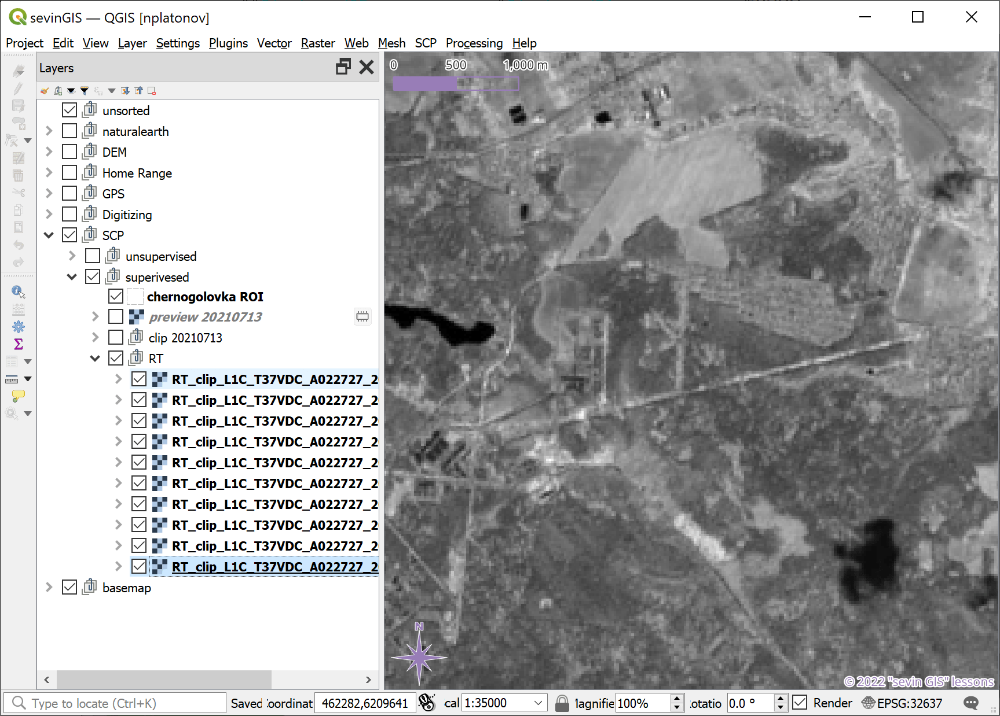 ] ] --- name: H62170 .toc.sidebar.left-column[ .outline[ ## [Оцифровка ](#H4e114) ## [Классификация](#Hf6ec4).fg[] ### [Установка модуля](#Hf6ec4) ### [Предобработка](#download) ### [Без учителя](#H2cb2c) ### [С учителем](#Hb1b58).fg[] #### [Данные для обучения](#H62170).fg[].bg[] #### [Классы (C) и макро-классы (MC)](#H36429) #### [Спектральные характеристики](#H22f12) #### [Результат](#H8ad5c) ] ] .toc.mainbar.right-column.scrollable[ .header.broad[ Данные для обучения ] .fixprecode[ <img src="assets/lesson09/Clipboard78.png" width="1330" height="600" bound style="display: block; margin: auto auto auto 0;" /> ] ] --- name: H36429 .toc.sidebar.left-column[ .outline[ ## [Оцифровка ](#H4e114) ## [Классификация](#Hf6ec4).fg[] ### [Установка модуля](#Hf6ec4) ### [Предобработка](#download) ### [Без учителя](#H2cb2c) ### [С учителем](#Hb1b58).fg[] #### [Данные для обучения](#H62170) #### [Классы (C) и макро-классы (MC)](#H36429).fg[] ##### [геометрия (оцифровка)](#H36429).fg[].bg[] ##### [таблица атрибутов](#H4873c) ##### [Заполнение](#H0219c) #### [Спектральные характеристики](#H22f12) #### [Результат](#H8ad5c) ] ] .toc.mainbar.right-column.scrollable[ .header.broad[ геометрия (оцифровка) ] .fixprecode[ <img src="assets/lesson09/Clipboard79.png" width="1330" height="600" bound style="display: block; margin: auto auto auto 0;" /> ] ] --- name: H4873c .toc.sidebar.left-column[ .outline[ ## [Оцифровка ](#H4e114) ## [Классификация](#Hf6ec4).fg[] ### [Установка модуля](#Hf6ec4) ### [Предобработка](#download) ### [Без учителя](#H2cb2c) ### [С учителем](#Hb1b58).fg[] #### [Данные для обучения](#H62170) #### [Классы (C) и макро-классы (MC)](#H36429).fg[] ##### [геометрия (оцифровка)](#H36429) ##### [таблица атрибутов](#H4873c).fg[].bg[] ##### [Заполнение](#H0219c) #### [Спектральные характеристики](#H22f12) #### [Результат](#H8ad5c) ] ] .toc.mainbar.right-column.scrollable[ .header.broad[ таблица атрибутов ] .fixprecode[ <img src="assets/lesson09/Clipboard80.png" width="1330" height="600" bound style="display: block; margin: auto auto auto 0;" /> ] ] --- name: H0219c .toc.sidebar.left-column[ .outline[ ## [Оцифровка ](#H4e114) ## [Классификация](#Hf6ec4).fg[] ### [Установка модуля](#Hf6ec4) ### [Предобработка](#download) ### [Без учителя](#H2cb2c) ### [С учителем](#Hb1b58).fg[] #### [Данные для обучения](#H62170) #### [Классы (C) и макро-классы (MC)](#H36429).fg[] ##### [геометрия (оцифровка)](#H36429) ##### [таблица атрибутов](#H4873c) ##### [Заполнение](#H0219c).fg[].bg[] #### [Спектральные характеристики](#H22f12) #### [Результат](#H8ad5c) ] ] .toc.mainbar.right-column.scrollable[ .header.broad[ Заполнение ] .fixprecode[ <img src="assets/lesson09/Clipboard82.png" width="1330" height="600" bound style="display: block; margin: auto auto auto 0;" /> ] ] --- name: H22f12 .toc.sidebar.left-column[ .outline[ ## [Оцифровка ](#H4e114) ## [Классификация](#Hf6ec4).fg[] ### [Установка модуля](#Hf6ec4) ### [Предобработка](#download) ### [Без учителя](#H2cb2c) ### [С учителем](#Hb1b58).fg[] #### [Данные для обучения](#H62170) #### [Классы (C) и макро-классы (MC)](#H36429) #### [Спектральные характеристики](#H22f12).fg[].bg[] ##### [Визуализация](#H9185c) ##### [Свойства](#H20cab) ##### [Отличия](#H0b128) #### [Результат](#H8ad5c) ] ] .toc.mainbar.right-column.scrollable[ .header.broad[ Спектральные характеристики ] .fixprecode[ <img src="assets/lesson09/Clipboard92.png" width="1330" height="600" bound style="display: block; margin: auto auto auto 0;" /> ] ] --- name: H9185c .toc.sidebar.left-column[ .outline[ ## [Оцифровка ](#H4e114) ## [Классификация](#Hf6ec4).fg[] ### [Установка модуля](#Hf6ec4) ### [Предобработка](#download) ### [Без учителя](#H2cb2c) ### [С учителем](#Hb1b58).fg[] #### [Данные для обучения](#H62170) #### [Классы (C) и макро-классы (MC)](#H36429) #### [Спектральные характеристики](#H22f12).fg[] ##### [Визуализация](#H9185c).fg[].bg[] ##### [Свойства](#H20cab) ##### [Отличия](#H0b128) #### [Результат](#H8ad5c) ] ] .toc.mainbar.right-column.scrollable[ .header.broad[ Визуализация ] .fixprecode[ <img src="assets/lesson09/Clipboard83.png" width="1330" height="600" bound style="display: block; margin: auto auto auto 0;" /> ] ] --- name: H20cab .toc.sidebar.left-column[ .outline[ ## [Оцифровка ](#H4e114) ## [Классификация](#Hf6ec4).fg[] ### [Установка модуля](#Hf6ec4) ### [Предобработка](#download) ### [Без учителя](#H2cb2c) ### [С учителем](#Hb1b58).fg[] #### [Данные для обучения](#H62170) #### [Классы (C) и макро-классы (MC)](#H36429) #### [Спектральные характеристики](#H22f12).fg[] ##### [Визуализация](#H9185c) ##### [Свойства](#H20cab).fg[].bg[] ##### [Отличия](#H0b128) #### [Результат](#H8ad5c) ] ] .toc.mainbar.right-column.scrollable[ .header.broad[ Свойства ] .fixprecode[ <img src="assets/lesson09/Clipboard84.png" width="1330" height="600" bound style="display: block; margin: auto auto auto 0;" /> ] ] --- name: H0b128 .toc.sidebar.left-column[ .outline[ ## [Оцифровка ](#H4e114) ## [Классификация](#Hf6ec4).fg[] ### [Установка модуля](#Hf6ec4) ### [Предобработка](#download) ### [Без учителя](#H2cb2c) ### [С учителем](#Hb1b58).fg[] #### [Данные для обучения](#H62170) #### [Классы (C) и макро-классы (MC)](#H36429) #### [Спектральные характеристики](#H22f12).fg[] ##### [Визуализация](#H9185c) ##### [Свойства](#H20cab) ##### [Отличия](#H0b128).fg[].bg[] #### [Результат](#H8ad5c) ] ] .toc.mainbar.right-column.scrollable[ .header.broad[ Отличия ] .fixprecode[ 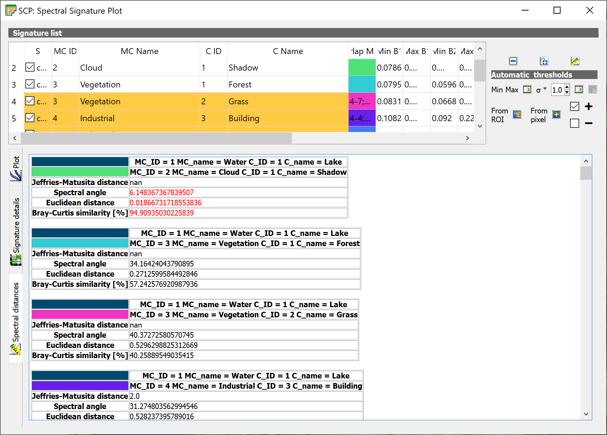 ] ] --- name: H8ad5c .toc.sidebar.left-column[ .outline[ ## [Оцифровка ](#H4e114) ## [Классификация](#Hf6ec4).fg[] ### [Установка модуля](#Hf6ec4) ### [Предобработка](#download) ### [Без учителя](#H2cb2c) ### [С учителем](#Hb1b58).fg[] #### [Данные для обучения](#H62170) #### [Классы (C) и макро-классы (MC)](#H36429) #### [Спектральные характеристики](#H22f12) #### [Результат](#H8ad5c).fg[] ##### [Классы (C)](#H8ad5c) <span class="bullet bullet-active">[•](#H8ad5c)</span><span class="bullet mslide66m">[•](#H6fa14)</span><span class="bullet mslide67m">[•](#H18a67)</span>.fg[].bg[] ##### [Макро-классы (MC)](#H7ab9d) ##### [Оценка качества](#H61616) ] ] .toc.mainbar.right-column.scrollable[ .header.broad[ Классы (C) ] .fixprecode[ 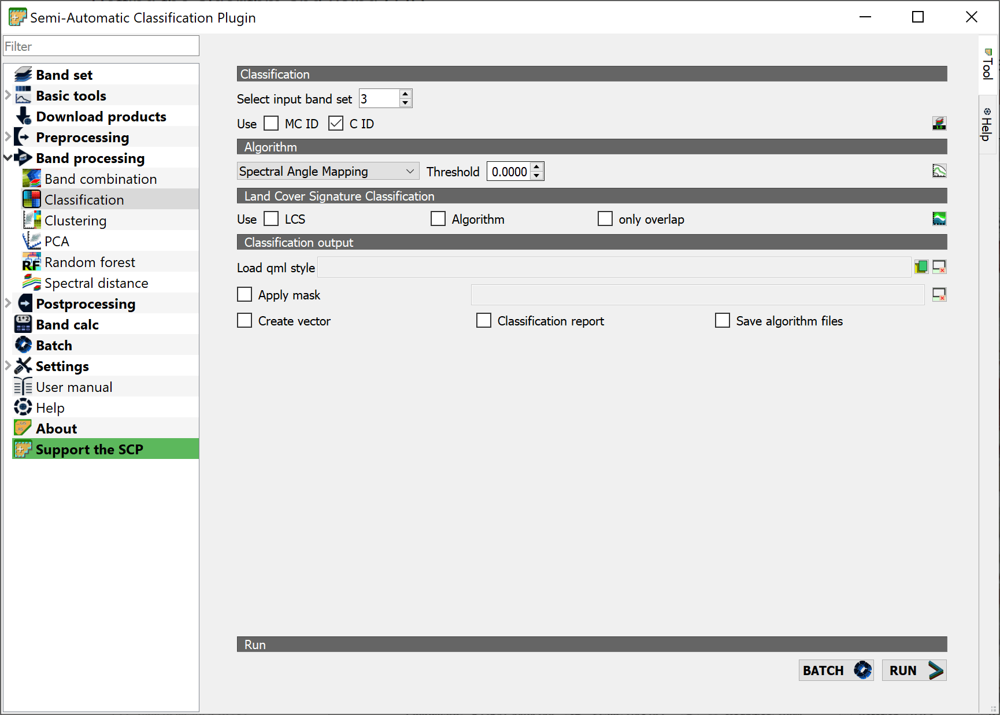 ] ] --- name: H6fa14 .toc.sidebar.left-column[ .outline[ ## [Оцифровка ](#H4e114) ## [Классификация](#Hf6ec4).fg[] ### [Установка модуля](#Hf6ec4) ### [Предобработка](#download) ### [Без учителя](#H2cb2c) ### [С учителем](#Hb1b58).fg[] #### [Данные для обучения](#H62170) #### [Классы (C) и макро-классы (MC)](#H36429) #### [Спектральные характеристики](#H22f12) #### [Результат](#H8ad5c).fg[] ##### [Классы (C)](#H8ad5c) <span class="bullet bullet">[•](#H8ad5c)</span><span class="bullet bullet-active">[•](#H6fa14)</span><span class="bullet mslide67m">[•](#H18a67)</span>.fg[].bg[] ##### [Макро-классы (MC)](#H7ab9d) ##### [Оценка качества](#H61616) ] ] .toc.mainbar.right-column.scrollable[ .header.broad[ Классы (C) ] .fixprecode[ <img src="assets/lesson09/Clipboard87.png" width="1330" height="600" bound style="display: block; margin: auto auto auto 0;" /> ] ] --- name: H18a67 .toc.sidebar.left-column[ .outline[ ## [Оцифровка ](#H4e114) ## [Классификация](#Hf6ec4).fg[] ### [Установка модуля](#Hf6ec4) ### [Предобработка](#download) ### [Без учителя](#H2cb2c) ### [С учителем](#Hb1b58).fg[] #### [Данные для обучения](#H62170) #### [Классы (C) и макро-классы (MC)](#H36429) #### [Спектральные характеристики](#H22f12) #### [Результат](#H8ad5c).fg[] ##### [Классы (C)](#H8ad5c) <span class="bullet bullet">[•](#H8ad5c)</span><span class="bullet bullet">[•](#H6fa14)</span><span class="bullet bullet-active">[•](#H18a67)</span>.fg[].bg[] ##### [Макро-классы (MC)](#H7ab9d) ##### [Оценка качества](#H61616) ] ] .toc.mainbar.right-column.scrollable[ .header.broad[ Классы (C) ] .fixprecode[ Соответствие цветов из таблицы данных для обучения <img src="assets/lesson09/Clipboard88.png" width="1330" height="600" bound style="display: block; margin: auto auto auto 0;" /> ] ] --- name: H7ab9d .toc.sidebar.left-column[ .outline[ ## [Оцифровка ](#H4e114) ## [Классификация](#Hf6ec4).fg[] ### [Установка модуля](#Hf6ec4) ### [Предобработка](#download) ### [Без учителя](#H2cb2c) ### [С учителем](#Hb1b58).fg[] #### [Данные для обучения](#H62170) #### [Классы (C) и макро-классы (MC)](#H36429) #### [Спектральные характеристики](#H22f12) #### [Результат](#H8ad5c).fg[] ##### [Классы (C)](#H8ad5c) ##### [Макро-классы (MC)](#H7ab9d) <span class="bullet bullet-active">[•](#H7ab9d)</span><span class="bullet mslide69m">[•](#Hff1e5)</span>.fg[].bg[] ##### [Оценка качества](#H61616) ] ] .toc.mainbar.right-column.scrollable[ .header.broad[ Макро-классы (MC) ] .fixprecode[ <img src="assets/lesson09/Clipboard89.png" width="1330" height="600" bound style="display: block; margin: auto auto auto 0;" /> ] ] --- name: Hff1e5 .toc.sidebar.left-column[ .outline[ ## [Оцифровка ](#H4e114) ## [Классификация](#Hf6ec4).fg[] ### [Установка модуля](#Hf6ec4) ### [Предобработка](#download) ### [Без учителя](#H2cb2c) ### [С учителем](#Hb1b58).fg[] #### [Данные для обучения](#H62170) #### [Классы (C) и макро-классы (MC)](#H36429) #### [Спектральные характеристики](#H22f12) #### [Результат](#H8ad5c).fg[] ##### [Классы (C)](#H8ad5c) ##### [Макро-классы (MC)](#H7ab9d) <span class="bullet bullet">[•](#H7ab9d)</span><span class="bullet bullet-active">[•](#Hff1e5)</span>.fg[].bg[] ##### [Оценка качества](#H61616) ] ] .toc.mainbar.right-column.scrollable[ .header.broad[ Макро-классы (MC) ] .fixprecode[ <img src="assets/lesson09/Clipboard90.png" width="1330" height="600" bound style="display: block; margin: auto auto auto 0;" /> ] ] --- name: H61616 .toc.sidebar.left-column[ .outline[ ## [Оцифровка ](#H4e114) ## [Классификация](#Hf6ec4).fg[] ### [Установка модуля](#Hf6ec4) ### [Предобработка](#download) ### [Без учителя](#H2cb2c) ### [С учителем](#Hb1b58).fg[] #### [Данные для обучения](#H62170) #### [Классы (C) и макро-классы (MC)](#H36429) #### [Спектральные характеристики](#H22f12) #### [Результат](#H8ad5c).fg[] ##### [Классы (C)](#H8ad5c) ##### [Макро-классы (MC)](#H7ab9d) ##### [Оценка качества](#H61616).fg[].bg[] ] ] .toc.mainbar.right-column.scrollable[ .header.broad[ Оценка качества ] .fixprecode[ В том числе, визуально: подложкой (ниже) или по [исходным данным](#rgb) 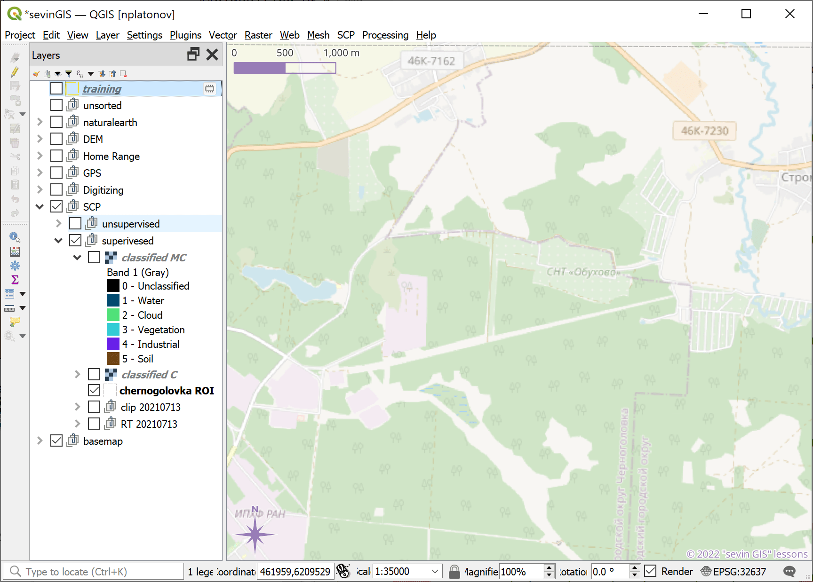 ] ] --- class: break inverse bottom right background-color: #032040 background-image: url(https://i.ytimg.com/vi/_HKLxlS2sv4/maxresdefault.jpg) background-size: cover .onlyremark.huge[Демонстрация в QGIS] --- name: beforefinalizing name: bib class: notable .footnote.small.bibliography[ <div class="backtoshow"><a href="javascript:window.history.back();">↩</a></div> **** <a name=bib-AtlasWWF></a>[Спиридонов, В. А., Е. Д. Краснова, М. В. Гаврило, and Н. Г. Николаева, ed.](#bib) (2011). _Атлас биологического разнообразия морей и побережий российской Арктики_. Авторский коллектив: Беликов С. Е., Гаврило М. В., Горин С. Л., Иванов А. Н., Краснова Е. Д., Краснов Ю. В., Кулангиев А. О., Лашманов Ф. И., Макаров А. В., Николаева Н. Г., Попов А. В., Сергиенко Л. А., Спиридонов В. А., Шредерс М. А.. М.: WWF России. 64 pp. URL: [https://wsbs-msu.ru/res/DOCFOLDER120/atlas_biol_ros_arkt_web.pdf](https://wsbs-msu.ru/res/DOCFOLDER120/atlas_biol_ros_arkt_web.pdf) (visited on Apr. 03, 2024). ]